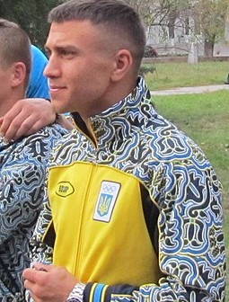

Best Boxer athlete
1) Vasyl Lomachenko is a Ukrainian professional boxer, widely regarded as one of the best fighters in my category(-60kg) in the world.
2) He is a two-time Olympic gold medalist, having won the titles in 2008 and 2012 in the featherweight and lightweight categories, respectively.
3) Lomachenko turned pro in 2013 and quickly made a name for himself with his impressive technical skills and ability to adapt to his opponents' styles.
4) He has held multiple world titles across different weight classes, including the WBO, WBA, and Ring Magazine titles.
5) Lomachenko is known for his aggressive style and footwork, which have earned him the nickname "Hi-Tech" in the boxing world.
Best Chess Player

1) Magnus Carlsen is a Norwegian chess grandmaster, currently ranked as the world number one chess player.
2) He became a grandmaster at the age of 13, making him one of the youngest players to achieve this title.
3) Carlsen won his first World Chess Championship in 2013 and has successfully defended his title multiple times since then.
4) He is known for his strategic and aggressive style of play, as well as his ability to excel in all types of chess games, including rapid and blitz chess.
5) Carlsen is also a successful entrepreneur, having founded a tech company called Play Magnus that develops apps and games related to chess(which I can personallly recommend).
Best Poker Player

1)Stu Ungar was a legendary professional poker player who was known for his exceptional skill and aggressive playing style.
2)He won the World Series of Poker Main Event three times, in 1980, 1981, and 1997, making him one of only three players to have achieved this feat.
3)Despite his success, Ungar struggled with addiction throughout his life and sadly passed away in 1998 at the age of 45.
4)He was posthumously inducted into the Poker Hall of Fame in 2001, in recognition of his impact on the game and his outstanding achievements.
5)Ungar's life has been the subject of several books and documentaries, cementing his place in poker history as one of the greatest players of all time.